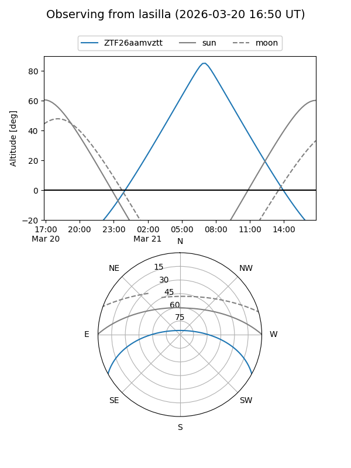
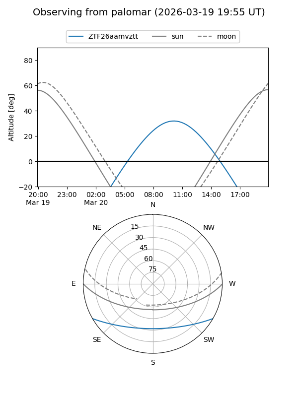

ZTF26aamvztt
Target ZTF26aamvztt at 2026-03-20 14:44
Aliases and brokers:
FINK: link
Lasair: link
ALeRCE: link
alt names
ZTF26aamvztt (ztf,fink_ztf)
Coordinates:
equatorial (ra, dec) = 212.3822,-24.58006
equatorial (HMS+DMS) = 14:09:31.74,-24:34:48.22
galactic (l, b) = (324.7000,+34.96915)
Flags:
Photometry:
last ztfg=19.50
1 ztfg detections
Lightcurve
Visibility


Additional plots